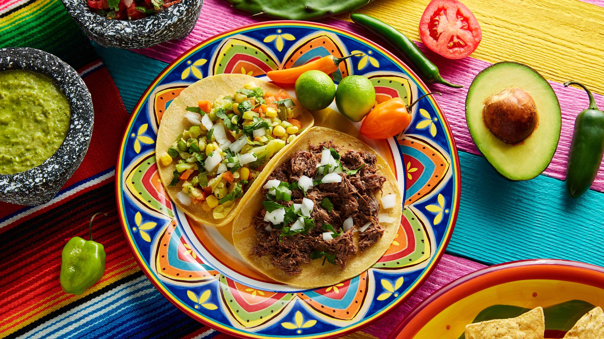
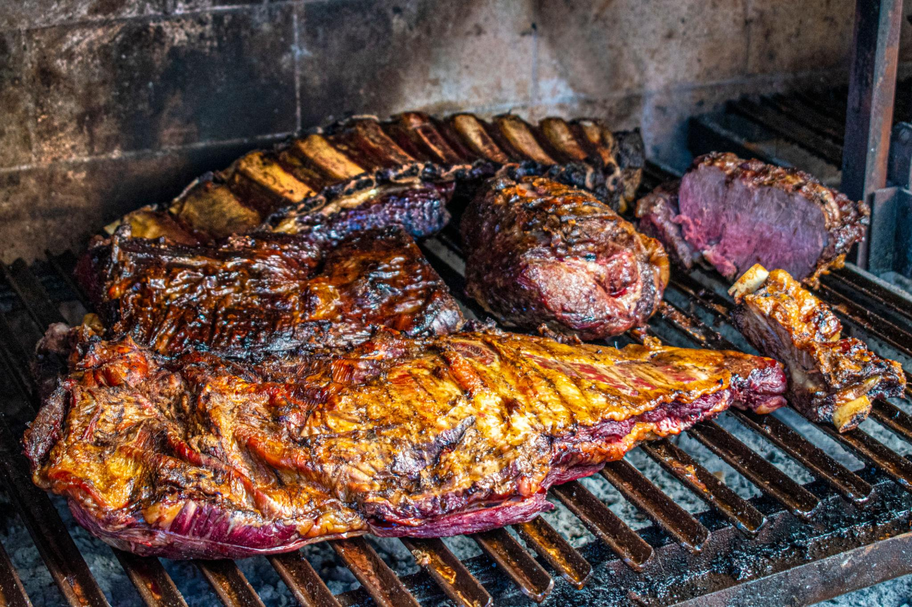
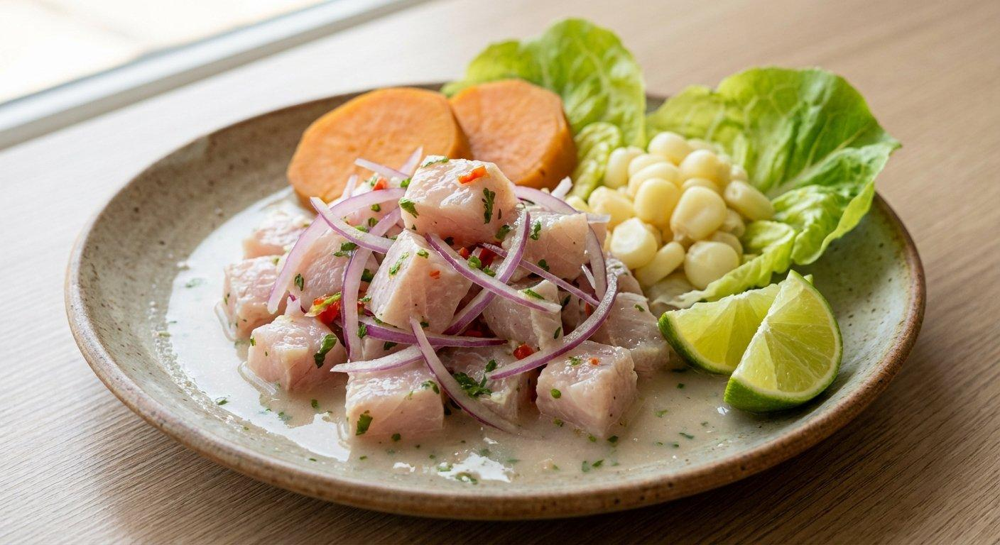
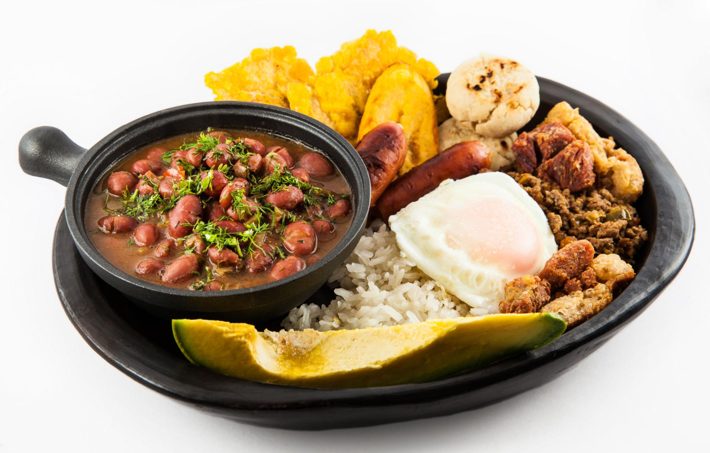
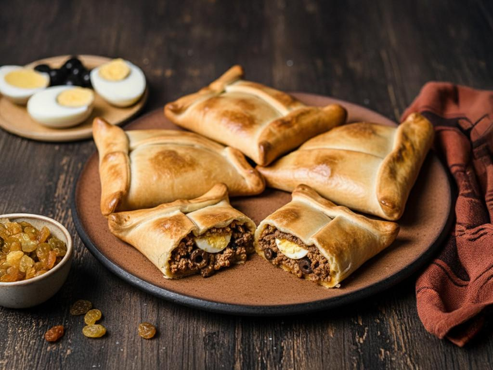
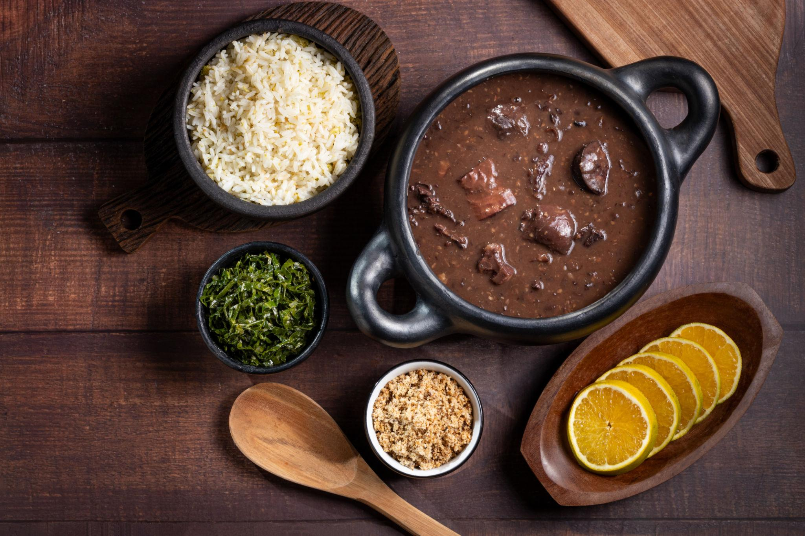

Conheça um pouco da gastronomia da America Latina
Podcast: O que é Front-End?
- Chile: Pastel de choclo, uma massa de milho recheada (1:17 - 1:40).
- Bolívia: Sopa de maní, um prato cremoso à base de amendoim (1:41 - 2:05).
- Peru: Tacacho ou bólon de verde, bolinho de banana-da-terra (2:12 - 2:37).
- Panamá: Tamales, massa recheada cozida em folha de bananeira (2:38 - 3:04).
- República Dominicana: Mofongo, prato à base de banana verde (3:05 - 3:23).
Catálogo Gastronômico da América Latina
A gastronomia da América Latina é marcada pela diversidade de sabores, ingredientes e tradições culturais. No México, destacam-se os tacos, as tortillas e o guacamole. Na Argentina, o churrasco e as empanadas são muito populares. No Peru, o ceviche é um dos pratos mais conhecidos. Na Colômbia, a bandeja paisa faz parte da culinária tradicional. No Chile, destaca-se a empanada chilena. Já no Brasil, são famosos a feijoada, o pão de queijo e o acarajé.Esses pratos representam a história e os costumes de cada país, reunindo influências indígenas, africanas e europeias. A culinária latino-americana é uma importante expressão da identidade cultural de seus povos.
- Tacos mexicanos Tortilhas recheadas com carne, vegetais e temperos típicos.
- Churrasco argentino. Carnes grelhadas, famosas pelo sabor e pela tradição.
- Ceviche peruano. Peixe marinado em limão, acompanhado de cebola e outros ingredientes
- Bandeja paisa. Prato completo com arroz, feijão, carne, ovo e banana-da-terra.
- Empanada chilena.Massa assada recheada tradicionalmente com carne, cebola, ovo e azeitona.
- Feijoada brasileira.Feijão-preto cozido com carnes, servido com arroz, farofa e laranja.





